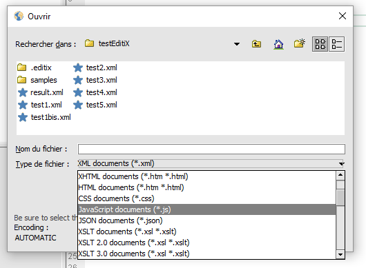
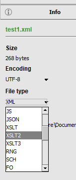
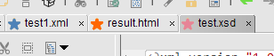

(*) A document type is chosen when opening a document or creating a new one.
EditiX displays information and error messages in the status bar on the right.
The message is displayed for 4 seconds, maybe this is not enough for you and you may change this behavior by showing a dialog window using the preference application/interface/externalMessage. For any errors, the following icon is displayed inside the status bar , clicking it displays a dialog box with all the last messages.
The output console is available at all times using the following button.  By clicking on the same button you can close this console. This console is useful for JavaScript output messages.
By clicking on the same button you can close this console. This console is useful for JavaScript output messages.
Each document has a document type that has to be chosen when opening a file according to the selected filter from the file dialog box.

You may update this document type using the File Info panel (from the "File" menu).

| Document
Type |
Role |
Icon |
|---|---|---|
| XML | Standard XML document |
 |
| DTD | Document Type
declaration document |
|
| TEXT | Simple text document
without XML content |
 |
| XSLT | XSL Transformations document | |
| XSLT2 | XSL Transformations 2.0 document | |
| XSLT3 | XSL Transformations 3.0 document | |
| XQR | XQuery document | |
| XHTML | XHTML document |
 |
| HTML | HTML document (4.0 or 5.0) | |
| JS | JavaScript document | |
| JSX | JavaScript document with the DOM API support | |
| FO | XSL-FO document |
|
| RNG | XML RelaxNG document |
|
| XSD | W3C XML Schema
document |
|
| SVG | Scalable Vector
Graphics document |
|
| DOCBOOK | DocBook document |
 |
| EXML | Very large XML document. EditiX will use minimal functions for saving memory. You will not have a tree, for example. | |
| EXF | XML Form Designer | |
| XXF | XML Form Editor | |
| ANT | Ant project document |
|
| XFL | XML Scenario |
Note: Blue color is usually for user XML documents, Green color is for transformation documents (like XSLT), Red color is for validation (like DTD), Yellow color is for visual documents (like SVG).
The document's icon is shown in the tab list of opened documents and when opening a recent document from the "File" menu.

| Menu item |
Role |
Shortcut* |
Document type |
|---|---|---|---|
| New Project... | Create a project from a physical directory. | All | |
| New Project from an archive | Create a new project using an archive (ZIP...) | All | |
| Open recent project... | Get a project from a previous choice | All | |
| Open project... | Open a project by selecting a system directory. Projects are identified by a specific icon. | All | |
| Close Project | Close the current project and save all the parameters | ||
| New Document... | Create a new document from the
available templates |
N |
All |
| Open Document... | Open a document from the file
system |
O |
All |
| Open recent... | Shows documents that were most
recently loaded, in order to select one to open. |
All |
|
| Open by HTTP | Open any documents by HTTP GET or POST methods. You can set and save your HTTP parameters. | All | |
| Insert file... | Insert a document at the caret
location |
All |
|
| Pin files | This is the way to open your pinned files | All | |
| Pin/Unpin file | Pin or unpin the current file | All | |
| Close | Close the current document. A
dialog box will be shown if the document must be saved before closing. |
Alt F4 |
All |
| Close all | Close all the opened documents. A
dialog box will ask to save changed documents that are not saved. |
All |
|
| Close and Delete | Close the current document and
delete it. The user can't read it again. A dialog will ask for confirmation before deleting. |
All |
|
| Import/HTML |
Convert an HTML document to XHTML |
All |
|
| Import/Spreadsheet |
Import CSV or Excel document, a dialog box will appear for selecting the right data |
All |
|
| Import/JSON | Import a JSON (.json) file format to XML | All | |
| Import/SQL | Convert an SQL query to XML using JDBC Driver (by default with ODBC) | All | |
| Export/Java classes | Create Java classes from the XML document. It will also generate a SAX handler for using objects rather than DOM nodes with this document. | All | |
| Export/JSON | Export your XML document to the JSON format | All | |
| XML Databases | Open a panel for managing XML databases content | All | |
| Style library... | Panel for storing/restoring CSS style in any documents | All | |
| Save | Save the current document for
the file system, ftp, zip, xml databases. The user doesn't have to worry
about the way the file has been loaded. |
S |
All |
| Save as... | Save the current document to the local
file system. |
All |
|
| Save as template... | Store the current document as a
template for use with the "New..." item. The user can delete it from the
"Template" menu. |
All |
|
| Save all | Save all the opened documents |
All |
|
| Browse files | Show or hide the file browser. This is a facility for editing quickly a document from the file system. | alt 1 | All |
| Browse files by FTP... | Browse an FTP server for editing
a file. The user will have to specify the host, user name and password. If
a proxy is needed, it is required to update the "proxy" preference. Use
the "Save" item for saving. |
All |
|
| Browse files by ZIP... | Browse a zip or jar file for
editing a file. Use the "Save" item for saving. |
||
| File info | Panel with the current file encoding and document type. The user can also change these values. | alt 3 | All |
| Encoding | Select a file encoding (like UTF-8 e.g.) for reading or writing a file. In case of uncertainty about encoding the "AUTOMATIC" value is recommended. This value is also available inside the preferences through the "file" category or when opening a new document. In the AUTOMATIC mode the encoding will be read from the XML prolog (encoding property), if missing it will use UTF-8. | All | |
| Print... | Print the current document |
P |
All |
| Quit | Exit from EditiX. (Quit EditiX) |
All |
* By default with ctrl or command (under Mac OS X)
- File/Template submenu
| Document type | Role | Shortcut* | Document type |
|---|---|---|---|
| Edit templates... | This is a dialog box for
updating the template parameters like the assigned extensions or the
icon... |
All |
|
| Generate a minimal template... | It will analyze the current
document and produce a minimal document that can be used as a template
for the next usage. |
All | |
| Insert template param | It will insert a template
parameter (current date, version, author, encoding...) used when
creating a new document from the template |
All |
| Menu item | Role | Shortcut* | Document type |
|---|---|---|---|
| Undo | Undo the last action. This is
unauthorized if you format the document. |
Z |
All |
| Redo | Redo the last action. |
Y |
All |
| Cut | Cut the selection. |
X |
All |
| Paste | Paste the clipboard |
V |
All |
| From the current node/Cut | Cut the current node | shift X | All |
| From the current node/Copy | Copy the current node. Use the Paste action after. | shift C | All |
| From the current node/Duplicate the previous sibling | Copy the previous node sharing the same parent node as the current node. | shift P | All |
| From the current node/Duplicate the following sibling | Copy the next node sharing the same parent node as the current node. | shift F | All |
| From the current node/trim the text | Trim the tag's text, removing whitespaces before and after | All | |
| From the current node/Add a bookmark | Store the current node inside the bookmark. Look at the search menu for usage. | B | All |
| From the current node/select | Select the current node (element or text). | shift A | All |
| Copy XPath location | Copy to the clipboard the current XPath location
at the caret. |
XML;XHTML;DOCBOOK;XXF |
|
| Copy File location | Copy to the clipboard the current file location. Path separator will be '/'. | All | |
| Select all | Select the whole document |
A |
All |
| Surround by a Tag... | Surround the selection by a tag. Note you can split your selection to repeat the surrounding for each line, for example.
|
shift T |
XML;XSLT;XHTML;XSD;RNG;FO;DOCBOOK;XXF |
| Repeat the last surrounding | Use your last surrounding parameters and apply it to the current selection. | alt R | XML;XSLT;XHTML;XSD;RNG;FO;DOCBOOK;XXF |
| Comment or Uncomment | Comment/Uncomment the current text selection. If there's no selection, the current node will be commented. |
M |
DTD;XML;XSLT;XHTML;XSD;RNG;FO;DOCBOOK;XXF |
| Surround by a CDATA Section | Surround the selection by an XML
CDATA section. |
XML;XSLT;XHTML;XSD;RNG;FO;DOCBOOK;XXF |
* By default with ctrl or command (under Mac OS X)
- Search menu
| Menu item | Role | Shortcut* | Document type |
|---|---|---|---|
| Find/Replace... | Search/Replace a character string in the
whole
document. |
F |
All |
| Search again |
Repeat the last search |
F3 |
All |
| File Search... | Open a panel for searching an expression in a project or a directory using text, XPath or regexp. | All | |
| Bookmarks/Go to | This is a submenu with all stored bookmarks. The submenu content can be stored using a project. | All | |
| Bookmarks/Add a bookmark | Add the current node inside the bookmark or the cursor location (for DTD, for example) | B | All |
| Bookmarks/Remove all bookmarks | Remove all the stored bookmarks | All | |
| Search in a tree clone... | Show a dialog box with a tree
clone to navigate in the whole document. |
XML;XSLT;XHTML;XSD;RNG;FO;DOCBOOK;XXF |
|
| Node search |
Search a part of the document
with XML criteria like an element name, an attribute name or value or
a namespace... |
XML;XSLT;XHTML;XSD;RNG;FO;DOCBOOK;XXF |
|
| Display the current element occurrences | Display in a left panel all the occurrences of the current element. | F2 | All |
| Show next node | Move the caret from the current location to the next tag. | shift U |
XML;XSLT;XHTML;XSD;RNG;FO;DOCBOOK;XXF |
| Show previous node | Move the caret from the current
location to the previous
tag. |
shift I |
XML;XSLT;XHTML;XSD;RNG;FO;DOCBOOK;XXF |
| Show the begin of the element node | Show without moving the caret
the beginning of the tag. |
shift L |
XML;XSLT;XHTML;XSD;RNG;FO;DOCBOOK;XXF |
| Show the end of the element node | Show the end of the tag without
moving the caret. |
shift P |
XML;XSLT;XHTML;XSD;RNG;FO;DOCBOOK;XXF |
| Go to/line... | Choose a line number where to
move the
caret. |
G |
All |
| Go to/offset... | Choose an offset from the beginning of the document | All |
| Menu item | Role | Shortcut* | Document type |
|---|---|---|---|
| Check this document | If a schema/DTD is available then
parse
and check the validity of the document. If no schema/DTD is available only
check if the document is well-formed. |
K |
XML;XSLT;XHTML;XSD;RNG;FO;DOCBOOK;XXF |
| Check all the documents | Check all the opened documents including XML/DTD/CSS/XQuery. This action can only work from a current XML document. | shift K | XML;XSLT;XHTML;XSD;RNG;FO;DOCBOOK;XXF |
| Check with schematron | Load an external schematron file and apply rules for the current XML document. Note that you can assign schematron file with a processing instruction from the DTD/Schema menu. | XML;XSLT;XHTML;XSD;RNG;FO;DOCBOOK;XXF | |
| Format/Pretty format (default) | If the document is well-formed then format the content with some tab characters. The number of tab characters can be changed using the Options/Preferences menu. |
R |
XML;XSLT;XHTML;XSD;RNG;FO;DOCBOOK;XXF |
| Format/Pretty format (explicit open/close elements) | This is similar to the previous menu, except there's no empty element like that <tag/> but only <tag></tag>. | XML;XSLT;XHTML;XSD;RNG;FO;DOCBOOK;XXF | |
| Format/Unformat | This is a way to create a very short document for optimizing parsing time. This is not user friendly, only for machines. | XML;XSLT;XHTML;XSD;RNG;FO;DOCBOOK;XXF | |
| Format/Tabulation width | This is a sub menu listing possible size for the tabulation character. When formatting a tabulation character is used for each level, the visible width of this tabulation can be changed here. Note that it requires reloading EditiX. | All | |
| Format/Indent size | It will set how many tabulations you can have when formatting an XML document for separating each element level. | All | |
| Comment... | Insert or edit an XML comment. |
XML;XSLT;XHTML;XSD;RNG;FO;DOCBOOK;XXF |
|
| Namespace manager... | A dialog box for inserting/removing a namespace easily. It will manage prefix or default namespace. | All | |
| Update | Update your current XML document using XSLT 1/2/3 or a JavaScript file with the DOM API | XML | |
| Use a temporary schema for completion | Generate an inner schema for
having a content assistant without available schema. |
XML;XXF |
|
| Disabled / Enabled syntax popup | Disable or enable the content
assistant. |
All |
|
| XPath view... | Builder for general XPath
expressions. When editing an XSLT document, it applies only to the XML
data document. A popup is available inside the history for copying/saving the XPath expressions. |
XML;XSLT;XXF |
|
| XQuery builder... |
Builder for XQuery expression.
Useful mainly for XSLT 2.0. |
XML;XSLT;XXF |
|
| XML Diff... | Open an external dialog for comparing both XML documents. | All | |
| Hexadecimal editor... | Open an external editor for hexadecimal usage, useful for detecting/changing the wrong BOM or characters. | All | |
| Character Reference view... |
Put an UTF-16 character reference like

 using a dialog box for choosing the decimal or hexadecimal
value |
All |
|
| XML Snippets View | This is a panel for storing and reusing easily XML structure like an HTML table. | XML;XSLT;XHTML;XSD;RNG;FO;DOCBOOK;XXF | |
| Lock/Unlock Tag update | Avoid the user corrupting a tag.
So when locking, the user can only update the text part. This action will be saved inside the current project. |
XML;XSLT;XHTML;XSD;RNG;FO;XXF |
|
| Auto close | Choose the mode for closing your tag depending on the content with several lines (block) or single line (inline) | ALL | |
| XInclude/Include XML file | Insert inside the XML editor an XInclude tag related to an external XML file | XML | |
| XInclude/Include XML file with XPointer | Insert inside the XML editor an XInclude tag related to an external XML file and XPointer location | XML | |
| XInclude/Include Text file | Insert inside the XML editor an XInclude tag related to an external Text file | XML | |
| XInclude/Extract the current node | Replace the current node by an XInclude tag building a new XML sub file | XML | |
| XInclude/Remove the XInclude node | Replace the XInclude tag by the related file | XML | |
| XML Catalog... |
Use a set of OASIS XML Catalogs
for working with custom DTD or Schema location |
ALL |
| Menu item | Role | Shortcut* | Document type |
|---|---|---|---|
| Assign DTD to document... | Insert a DTD declaration inside
the current XML document. |
XML;XXF |
|
| Assign W3C XML Schema to document... | Insert a W3C XML Schema
declaration inside the current XML document. Note that the user will
have to move the inserted part if the initial document was not empty. |
XML;XXF |
|
| Assign XML Relax NG Schema to
document... |
It will bind your document to a
Relax NG schema. Thus the code assistant and the "Check or Validate"
action will work with it. Note that using a project you can save this
relation. |
XML;XXF |
|
| Assign schematron to document... | Insert a schematron processing instruction from a file selection. This instruction will be used automatically when checking your document. | XML;XXF | |
| Generate DTD from this document | Generate a new DTD from the
current XML document. Thus the user will be able to validate its
document. |
XML;XXF |
|
| Generate W3C Schema from this document | Generate a new W3C XML Schema
from the current XML document. Thus the user will be able to validate
its
document. |
XML;XXF |
|
| Generate XML RelaxNG from this document | Generate a new RelaxNG Grammar from the current XML document. Thus the user will be able to validate it. | XML;XXF | |
| Generate a documentation from this DTD | Generate an HTML documentation with the DTD content | DTD | |
| Generate a documentation from this Schema | Generate an HTML document with the W3C Schema content. | XSD | |
| Convert DTD to W3C XML Schema | Convert the current DTD to a W3C
XML Schema. |
DTD |
|
| Convert DTD to XML RelaxNG | Convert the current DTD to an XML
RelaxNG Schema. |
DTD |
|
| Convert XML RelaxNG to W3C XML Schema | Convert the current XML RelaxNG
schema to a W3C XML Schema. |
RNG |
|
| Convert XML RelaxNG to DTD | Convert the current XML RelaxNG
schema to a DTD. |
RNG |
|
| Check this DTD | Scan the current DTD and check for invalid declaration or usage. | DTD | |
| Generate an XML Template from this Element | Go to an element definition from your grammar, a new XML document will be generated from it. |
XSD;DTD;RNG |
| Menu item | Role | Shortcut* | Document type |
|---|---|---|---|
| Assign XSLT to this document... | Insert an XML processing
instruction for binding an XSLT document to the current one. Thus some
browsers like IE will transform the document
automatically. |
XML;DOCBOOK;XXF |
|
| Assign CSS to this document... | Insert an XML processing instruction for binding a CSS document to the current one. Thus some browsers like IE will transform the document automatically. | XML;DOCBOOK;XXF |
|
| Map a W3C Schema | Assign a schema to the current XSLT document for the content assistant. It helps for creating the output document. | XSLT | |
| Transform using an XQuery request... | Transform the current XML document using an XQuery request. | XML;XXF | |
| Transform a document with this XQuery request... | Transform an XML document using the current XQuery request. | XML;XXF | |
| Transform using XSLT... | It will display a dialog box
with the XSLT parameters like the data source, the XSLT document and
the final result document. Once the parameters are fixed, the
transformation will operate. |
XML;DOCBOOK;XXF |
|
| Transform a document with this XSLT... | This is very similar to the previous one except the XSLT document will be the current one. Once the parameters are fixed, the transformation will operate. | XSLT |
|
| Start XSLT debug | Start the XSL transformation in
a debug mode to analyze the way the processing is completed. This
action requires having at least one breakpoint. |
XSLT |
|
| Run until the next breakpoint | Run in a debug mode to the next
breakpoint. |
shift B |
XSLT |
| Run step by step | Run in a debug mode until the
next tag. |
shift E |
XSLT |
| Terminate XSLT debug | Conclude the XSL Transformation
in a debug mode. It will show the final result. |
XSLT |
|
| List of breakpoints | Display a dialog box with the
user's breakpoints |
XSLT |
|
| Profile this XSLT... | Check your XSLT iteration timing | XSLT | |
| Archive your transformation | Store and reuse any XSL transformations. It includes XQuery too. | All | |
| Create a scenario... | Generate a scenario file for running the transformation in batch mode for a set of XML sources | XSLT | |
| Repeat last transformation | Redo the last XSL transformation. |
J | XML;DOCBOOK;XSLT;XXF |
| Menu item | Role | Shortcut* | Document type |
|---|---|---|---|
| FO Transformation... | Display a dialog box for
choosing the parameters of the FO Transformation like the final
document type (PDF...). |
FO |
|
| Repeat last transformation | Repeat the last transformation
with the parameters from the previous item. |
FO |
|
| New Link... | Insert basic external and inner links. Inner links require at least one id attribute like on the block element. | FO | |
| New List... | Insert a hierarchy of items | FO | |
| New Table | Insert a fixed table with a set of rows and columns. | FO | |
| Edit FOP Configuration | It will create an fop.xml configuration file inside your .editix directory, this is useful for adding a new font, for example... | FO |
| Menu item | Role | Shortcut* | Document type |
|---|---|---|---|
| DocBook Transformation... | Display a dialog box for
choosing the parameters of the DocBook Transformation like the final
document type (PDF...). |
DOCBOOK |
|
| Repeat last transformation | Repeat the last transformation
with the parameters from the previous item. |
ctrl shift J |
DOCBOOK |
* By default with ctrl or command (under Mac OS X)
- HTML
| Menu item | Role | Shortcut* | Document type |
|---|---|---|---|
| New Link... | Insert a set of external or inner links. |
HTML;XHTML |
|
| New List... | Insert a hierarchy of items. | ||
| New Table... | Insert a table with a set of rows and columns. Headers can be set too. | HTML;XHTML | |
| Convert to XHTML | Convert an HTML document to a XHTML one. | HTML | |
| Browser preview | Display your HTML document using the default navigator. | HTML;XHTML |
- JSON
| Menu item | Role | Shortcut* | Document type |
|---|---|---|---|
| Assign a JSON Schema... | Link a JSON Schema to your JSON document, it will be used when checking the document. You need a project for future use. |
JSON |
|
| Check | Check your JSON document; it may also use a JSON Schema. | JSON | |
| Format | Format your JSON document. | JSON | |
| New member... | Add a new member to the current object, note it will format the full document | JSON | |
| Insert | A submenu for inserting at the caret location a set of JSON objects like arrays... | JSON | |
| Delete the member | Delete the member at the caret location. Note it will format the full document. | JSON |
| Document type | Role | Shortcut* | Document type |
|---|---|---|---|
| Split/Unsplit Vertically | Split or unsplit the current
document vertically. Thus the user can modify one view and look at
another
one. |
All | |
| Split/Unsplit Horizontally | Split or unsplit the current
document horizontally. Thus the user can modify one view and look at
another one. |
All | |
| Hide/Show tree | Hide or show the document tree.
Hide will maximize the user editing area. |
All | |
| Select... | Display a dialog box for
selecting a document from its file path. |
All | |
| Previous Selected File | Select or Open the previous document | Alt - Left | All |
| Next Selected File | Roll back to the last document (when selecting the previous action) | Alt - Right | All |
| Windows | Sub menu with all the windows (shown in the left panel side). | All |
|
| Extract the current editor | Will open the current editor in a new individual window. This is useful when requiring to compare multiple documents. It can be used too on the editor tabs with a popup menu. | All | |
| Extracted editors | Show the extracted editors due to the previous action. The selected window will be put in the foreground. | All | |
| System preview | It will call the current system viewer for this document. For example with an XHTML document it may call your navigator like IE or FireFox depending on your operating system. |
All | |
| Browser preview | Try to call your default browser with the current document. | All | |
| SVG preview | Display a dialog box with an SVG
preview. Take a little delay into account before the first content
display. |
All | |
| Whitespace display | Display or not each whitespace from the current document. | All |
- Options menu
| Menu item | Role | Shortcut* | Document type |
|---|---|---|---|
| Preferences... | Display a dialog box with the
user's preferences. Such preference will modify the way EditiX is
working. Note that it is required to restart EditiX after changing a
value. |
All |
|
| EditiX Descriptor | Display the application descriptor, you can update menus, toolbars and add your own actions | All | |
| External Tools... | Show a dialog box for running an
external command. This command can contain some macros like the current
document path... |
All |
|
| Check the last version... | It will query the EditiX site
the last available version. |
All |
|
| Install a custom parser... |
Install and use a Java JAXP
compatible XML parser |
All |
|
| Install a custom transformer... |
Install and use a Java JAXP
compatible XSLT transformer |
All |
|
| Install a custom xmldb driver... | Install an xmldb compatible driver for XML database. Usage is for the XML databases panel. | All | |
| Scripts/Manage scripts | Add a new script inside the Script Manager. After installation, you can run it from the "Run a script" item or by a shortcut. | All | |
| Scripts/Test Script | Try to run your current script. | JS | |
| Scripts/Install new Scripts | This is a dedicated page for installing new scripts inside EditiX. | All | |
| Scripts/Run a script | A submenu containing all the scripts defined in the Script Manager dialog. This is always available when running EditiX. You can run it directly or using a shortcut. | ||
| Schema CSS document | Update the default CSS document for generating a W3C Schema documentation. | ||
| Edit XSLT Document outputs... | Update the configuration with all the zipped XSLT document output like docx. If you want to check after an XSLT transformation, you must reload it... | ||
| Reload XSLT Document outputs | When changing the XSLT Document outputs, you can reload it in memory with this action, thus EditiX will take it into account for the next transformations. | ||
| Clean/The offline DTD cache | Remove the cache for external DTD. Editix loads your external DTD inside a local directory for performance. | All | |
| Clear/The last opened files history... | Remove the file from the open recent submenu inside the file menu | All | |
| Clean/The last opened projects history | Remove the file from the open recent project submenu inside the file menu | All | |
| Clean/The window locations | Remove all your favorite window location and site. This is useful when changing your screen resolution to avoid off-screen windows. | All |
* By default with ctrl or command (under Mac OS X)
- Help menu
| Document type | Role | Shortcut* |
Document type |
|---|---|---|---|
| User Manual... |
The EditiX Manual download from this page. |
All |
|
| Tip of the day... | Display a tip for the day. This
dialog box can be shown when starting EditiX. |
All | |
| Reference documentation | Standard HTML references mainly with W3C links. | 1 ... n or alt + 1 .. n | All |
| Output console... | Display any output message, a debug flag can be selected for displaying inner messages. |
All |
|
| Buy online... | Open a browser for purchasing an activating key | All | |
| Register... | Insert your activating key (from the purchasing page) for unlocking EditiX | All | |
| Release NEWS... | It displays the list of changes
for each version |
All | |
| About... | Set of information about the
product version. |
All |
{kind=link}